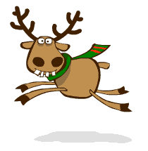
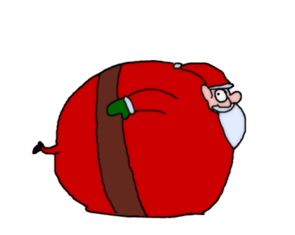

<html>
	<head><meta http-equiv="Content-Type" content="text/html; charset=UTF-8">
		<title>Demo of Image KeyInput Image Movement JavaScript</title>
<script language="JavaScript" type="text/JavaScript" src="js/JavaScipt.js">


/*
Web Programming
2019
https://f20wp.github.io
Ben Kenwright

Demonstrate:
1. user input (e.g., keys)
2. reset/start game
3. simple animation/movement
4. todo - game mechanics (score/gameover/playtesting, ..)
*/ 


</head>
<body >
	
	<input type=button onClick=Reset1() value='Start'></br>
	Press left and right keys for movement and up key for jump
    <div id='msg'></div>
	
	<br><br><br><br>
</body>
</html>


